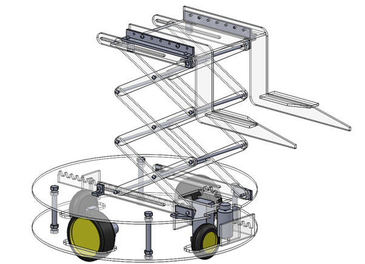
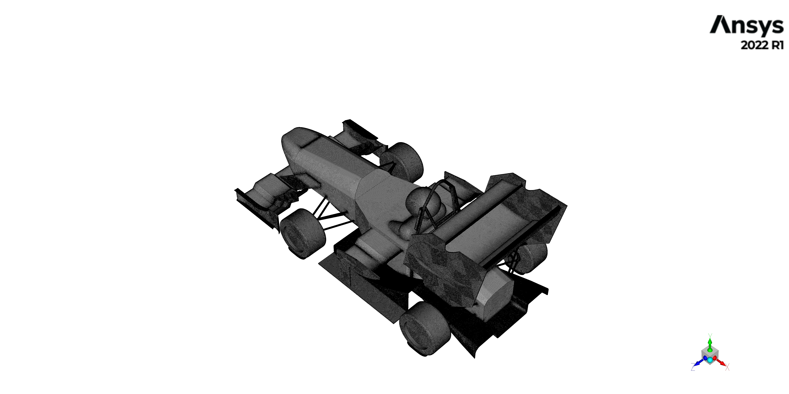

I attended Queensland University of Technology (QUT) from 2017 to 2023, earning an Honours degree in Mechanical Engineering and a Bachelor's degree in Business Management.
I graduated with a GPA of 5.5 and achieved Second Class Honours.
I chose Mechanical Engineering because of my strong background in Physics and Mathematics, as well as my keen interest in problem-solving. I believed that pairing the Mechanical Engineering degree with a Bachelor's in Business Management would be beneficial, and I hope it proves worthwhile. Although I was very close to dropping the Business Management program during my first semester, I persevered and completed it.
Subjects
I had a couple of subjects that resonated with me, documented below:
EGB111 - Foundations of Engineering Design
The team was tasked with creating a truss that could relocate a payload. I don't have too many details of the assignment stored on file. I've attached a draft of the final report. There were three reports in total, including preliminary calculations of structural strength and specifications for the display motor, as well as designs.
Welcome to Gondwana, the planet where famine is imminent, and our brave engineering students are the superheroes who will save the day! Their task is to design and build an autonomous system that can collect and relocate a power pack from a dry well to a new aquifer.
The system must be lightweight, efficient, and complete the task before the students succumb to the dreaded enervation. No pressure, right?
To showcase their skills, the students will use a miniaturized testing board with three poles and payloads. The device must autonomously collect and place one of the payloads into the 'bunker' to demonstrate its potential to save Gondwana from famine and highlight the power of engineering to the universe.
Prototype System
The prototype system is designed and tested on a scaled-down testing board featuring three poles, each with payloads at the top. The device is required to collect one of these payloads and place it into a designated bunker.
The autonomous system must begin its operation from within a garage with a vertical clearance of 400 mm. It must retrieve Payload B, located at a height of 300 mm, and transfer it to a bunker situated on the opposite side of the track. The bunker is surrounded by simulated rugged terrain, posing challenges for the system to ascend. Therefore, the system must incorporate a mechanism to expand over the bunker to accomplish its task.
The system can be divided into several functional components, including elevation, collection, depression, delivery, locomotion, and navigation. For this project, the autonomous system comprises four key subsystems: collection, lifting, locomotion, and navigation.
Product
Attached below is the group’s initial concept design report heading into the construction of the robot. It appears I am missing the other reports and assessments. All groups were given a small budget for additional parts but primarily relied on components provided by the university and manufacturing resources available on campus.
The robot consisted primarily of laser-cut acrylic available at QUT, with two plates separated by metal spacers and held together by bolts purchased from Bunnings. The robot incorporated an acrylic scissor lift actuated by a rope and a provided stepper motor. While the scissor lift was somewhat unsteady, it was sufficient to pick up and carry the payload. An acrylic rack-and-pinion system was utilized to push the payload over and into the bunker. However, the robot had to reach the bunker first.
Locomotion utilized the provided two DC motors, and the group decided to buy two omni-wheels to allow the robot to pivot.
The autonomous system required a set of coded commands to complete the course. The code was divided into three main sub-sections: locomotion, the scissor lift component, and the extension component, all guided by a navigation system. Basic 12V direct current (DC) motors were paired with H-bridges (L298N) to control the drive wheels and the scissor lift in both speed and direction. The H-bridge acted as a switch, changing the direction of the current through simple commands.
To address the power inefficiencies of the DC motors, pulse width modulation (PWM) from the H-bridge was manipulated to ensure the robot moved straight while driving. The extension system used a supplied stepper motor, which operated at a slow and steady pace to prevent the payload from being bumped off the forks. The stepper motor's functionality was enhanced by the availability of a library resource, allowing for quick and straightforward implementation.
The system used two H-bridges powered by separate 12V batteries. This setup ensured full power delivery to the DC motors, which in turn relayed voltage back to the Arduino Uno board. This voltage activated the board, which then transferred power to the stepper motor via a breadboard.
The navigation system underwent several iterations before finalization. Initially, the code relied on photo sensor interrupts and buttons to guide the robot. This was later replaced with a system utilizing only an ultrasonic sensor, and finally, a time-based navigation code was implemented. While time trialing proved easy to set up, it was tedious and potentially unreliable due to voltage fluctuations.
The figure below is the teams final design.

Results
The robot placed second within the cohort—a very successful outcome! The task was quite challenging, with limited support in terms of coding, concepts, and available components.
The first video shows the robot a couple of days before testing, while the second video was taken a week prior, focusing on testing its features.
EGB214 - Materials and Manufacturing
This subject focused on materials specific to iron, as well as manufacturing processes.
The group assignment was interesting, involving the reverse engineering of a gearbox.
The assignment for Thermodynamics piqued my interest, as it involved extrapolating data obtained from dynamometer testing for a diesel six-cylinder engine.
This report investigates the performance of a six-cylinder diesel engine by examining how it converts chemical energy from fuel into mechanical work.
Key performance metrics—including brake power, torque, brake mean pressure, specific fuel consumption (SFC), and brake thermal efficiency—were measured using various instruments, such as a water brake dynamometer, fuel and air flow rate meters, and in-cylinder data loggers.
I've attached the Egnine Performance Analysis below.
I cannot find the assessment but I have summated the research proposal below:
Introduction
World energy consumption is expected to double by 2050, and the current dependence on fossil fuels for energy will generate unprecedented carbon dioxide emissions and have adverse effects on climate change. Hydrogen has been promoted as an ideal fuel to replace fossil fuels, necessitating the development of a hydrogen economy. However, significant scientific, technological, and socioeconomic barriers must be overcome to achieve this.
This review explores key themes in hydrogen research, identifies potential gaps, and proposes advancements. While hydrogen’s application in internal combustion engines (ICEs) is explored, its use in fuel cells (FCs) is highlighted as more favorable. Key challenges include the immense power required for sustainable hydrogen production and insufficient storage and distribution technology for commercialization.
Internal Combustion Engines (ICEs)
Hydrogen can power both ICEs and FCs. However, using hydrogen in ICEs produces nitrogen oxide emissions due to its high ignition temperatures. Studies suggest that reducing hydrogen’s stoichiometric ratio can lower ignition temperatures and nearly eliminate nitrogen oxide emissions. Hydrogen’s properties, such as flame speed, ignition temperature, and diffusivity, also enhance efficiency compared to hydrocarbon fuels.
While hydrogen ICEs have lower power output, lean boosting can address power concerns by supercharging a lean mixture. However, this introduces backfires, requiring complex modifications, such as retarding the intake valve opening timing. Despite challenges, hydrogen ICEs offer near-zero emissions and short-term commercialization potential due to their similarity to existing engines.
Fuel Cells (FCs)
Fuel cells are the focus for hydrogen-powered transportation. They convert hydrogen and oxygen into electrical energy with no harmful by-products, achieving 65% efficiency compared to ICEs’ 25%. However, FC technology faces cost and reliability issues, primarily due to expensive materials like platinum and the lack of economies of scale. Advancements in materials science may address these challenges, making FCs more viable in the future.
Hydrogen Production
Hydrogen is an energy carrier, not a fuel, and is primarily produced from fossil fuels. Around 95% of hydrogen production comes from steam methane reforming (SMR), an inexpensive but fossil-dependent process. SMR combined with carbon sequestration shows short-term promise, but it is complex and costly.
Electrolysis, a cleaner method, contributes only 4% of production due to high costs and energy demands. Renewable energy sources, particularly wind, offer potential for scaling hydrogen production sustainably. For example, meeting U.S. gasoline demands would require 850 GW of power, highlighting the scale of renewable energy integration needed for a hydrogen economy.
Hydrogen Storage
Hydrogen’s dense energy-to-weight ratio is ideal for applications like rocket propulsion but presents challenges for onboard fuel storage due to its poor energy-to-volume ratio. Current storage methods include high-pressure gas containers and cryogenically cooled liquid hydrogen. Both methods are energy-intensive, requiring up to 40% of hydrogen’s energy for cooling and storage.
Safety concerns, such as the risks associated with pressurized and liquefied hydrogen, hinder public acceptance. Solid-state hydrogen storage shows potential but is under-researched. Infrastructure for off-board storage, such as refueling stations, remains expensive and inefficient, further delaying commercialization.
Hydrogen Distribution
Hydrogen distribution is expensive and energy-intensive, with current methods including compressed gas cylinders, liquid hydrogen tanker trucks, and pipelines. Pipelines, while economical in theory, require significant infrastructure investment and pose safety risks due to hydrogen’s high flammability.
Coupling hydrogen distribution with renewable energy networks could mitigate intermittency in power supply while centralizing refueling stations for vehicles, particularly large trucks, to reduce emissions and operational costs.
Conclusion
While a hydrogen economy has the potential to revolutionize energy and reduce greenhouse gas emissions, significant challenges must be addressed. These include cost-effective and sustainable production methods, advancements in storage and distribution, and reducing fuel cell costs. Overcoming social and political barriers is equally critical.
Investments in research, infrastructure, and public education are essential to achieving a hydrogen economy and a sustainable energy future.
EGH420 - Mechanical Systems
EGH420 was solely based on assignments, picking a hypothetical design topic; our group's topic was the conceptual design of a brake caliper for the QUT Motorsport (QUTM) Team. Several assignments are attached below.
Project Description: Custom Brake Caliper Design for QUT Motorsport QEV3
An automotive braking system allows the driver to slow down or stop the vehicle using manual force. The existing braking system on the QUT Motorsport (QUTMS) QEV3 electric race car features two hydraulic systems (front and rear) actuated by the driver via the brake pedal, which incorporates a front/rear bias bar configuration. Brake fluid transmits pressure generated in the master cylinder to each wheel, where hydraulic disc brake calipers press brake pads against a steel rotor to generate friction, converting kinetic energy into heat.
QUTMS selected the Wilwood GP200 caliper for the front wheels, but due to space constraints at the rear, off-the-shelf calipers were unsuitable. Therefore, the engineering team was tasked with designing a custom compact brake caliper compatible with the QEV3's existing system while complying with FSAE rules. The design aimed to meet specific vehicle needs and provide adequate stopping capability, with a focus on lightweight construction and manufacturability using modern methods.
Design Summary
The final design was derived from four conceptual designs, featuring two opposed pistons (24 mm outer diameter) in a conventional caliper configuration, held together by two M8 bolts. The fixed caliper design was chosen for its greater stiffness and even pad wear. Machined from billet 7075 T6 aluminum, the caliper optimizes strength-to-weight and heat conductivity characteristics. The piston diameter was determined based on established design methodologies and was compatible with AP Racing CP4226D27-RX sintered brake pads, known for their compact form and high-heat capability.
The caliper mounts directly to the QEV3 wheel upright using two M8 fasteners, maintaining at least 5 mm clearance from surrounding components. The compact design allowed optimal positioning of pad retention hardware and hydraulic fittings. Fluid management features a banjo fitting for the brake line and a bleed port, with a dust cap added for debris protection. A cross-over tube design was selected for fluid routing, enhancing serviceability and manufacturing cost-efficiency.
The design prioritizes effective thermal management to prevent brake fade. Stainless-steel pistons were designed with minimal contact area to reduce heat transfer, and DOT 5.1 brake fluid was chosen for its high-temperature stability. The caliper's geometry increased lateral rigidity and operating load range.
Design Analysis & Validation
Structural and thermal analysis were crucial for performance validation. Finite Element Analysis (FEA) was conducted under maximum braking force (1513 N) and hydraulic pressure (9 MPa). A maximum stress of 211 MPa was observed, achieving a safety factor of 1.7 against fatigue failure with the 7075 T6 aluminum. The piston showed a safety factor of 2.2 against pressure, validating the selection of 316 stainless steel for its manufacture.
Thermal analysis indicated peak temperatures at the pad-rotor interface could reach 262°C, ensuring that brake fluid would not exceed its operational limits. The design successfully balanced weight, performance, and maintainability, making it suitable for the QUT Motorsport QEV3 electric race car.
The assignment investigated heat exchanger configurations and materials. Although intended to be a collaborative project, it was completed individually. Heat exchangers are essential in various applications, enabling heat transfer between fluids through conduction, convection, and radiation. Their effectiveness is influenced by factors such as physical size, weight, and overall heat transfer coefficient. This report examines different types of heat exchangers, explores the relationship between volumetric flow rate and heat transfer, and presents both computational and experimental results.
Aluminum and copper double-pipe heat exchangers were modeled using ANSYS Fluent, with designs featuring different inner diameters. The optimal mesh was achieved through iterative element size reduction. Simulations were initialized and tested for convergence before collecting data with the HAMPDEN Model H-6878 6-Pass Heat Exchanger Demonstrator.
I've attached the Heat Exchanger lab report below.
The assignments focused on Computational Fluid Dynamics (CFD), undertaken as a duo. The first assignment was a “Mesh Refinement” report analyzing laminar flow around a bluff body through meshing methods and refinement strategies. Mesh refinement is a crucial step in CFD simulations to produce accurate results in the least computational time and resource usage.
The second assignment involved a CFD simulation of a NACA 0012 aerofoil model, a well-studied aerodynamic tool, under steady and transient turbulent airflow attacking at various angles.
My time at university was extended because I dropped my thesis unit twice. The first time, I failed to secure a project in time, and the second time, I planned to combine the two thesis semesters into one but was again unable to secure a project in advance to pursue that option.
I ended up taking an extra year, with my only subject being my Honours Engineering Capstone—my thesis. I was eager to undertake the cornering CFD simulation for the QUT Motorsport Team’s EV4. The QUTM team competes in the FSAE competition, which judges student vehicles across several static and dynamic events, with a strong emphasis on cornering performance and design justification.
Aerodynamics is crucial to vehicle performance, particularly in generating downforce, which can significantly enhance traction during acceleration and cornering. However, cornering introduces variable airflow velocity and curvature, requiring specialised techniques and analysis. Due to limitations in experimental replication, the project focused solely on numerical methods. The deliverable was to develop a high-confidence numerical simulation that could be utilised by QUTM to improve performance in cornering events within the FSAE competition.
The project was able to conclude a numerical simulation method of high confidence, with results that aligned well with documented literature on cornering characteristics but indicated a need for further validation and collaboration with the QUTM team. Future experimental tests are challenging to isolate in the current environment.
The assignment was challenging, requiring in-depth research and extensive time spent testing and iterating simulation setups. Early progress was slow due to difficulties replicating Ahmed Body case studies in cornering motion. Once the simulation methodology and setup were validated, computational demands increased for larger, more complex structures. The project progressed to analyzing individual components on the EV4 such as front and rear spoilers, diffuser, chassis, etc to gain an indication of component performance and further align findings with literature before moving on to the EV4.
One significant challenge was the computational power required for larger simulations. Transitioning from a simple bluff body to more complex, intricate, and larger models necessitated the use of QUT's High-Performance Computer (HPC), which took days to converge for larger simulations. The HPC lacks a user interface and is navigated through Bash, requiring additional learning.
The image below shows the entire EV4 with the driver, resulting in a mesh with 100 million cells—far exceeding the RAM capacity of most high-end computers.

The number of simulations and the resolution of final simulations became increasingly difficult, adding to the project’s time constraints. Despite these challenges, I thoroughly enjoyed the project and successfully validated a cornering simulation with high confidence, supported by case studies and literature. However, I was unable to complete the desired number of tests and scenarios for the EV4, resulting in insufficient data for significant performance recommendations.
The project successfully delivered simulations with high confidence. However, further work is needed, as simulations for the EV4 were limited to corner radii of 5, 20, and 40 meters for the events.